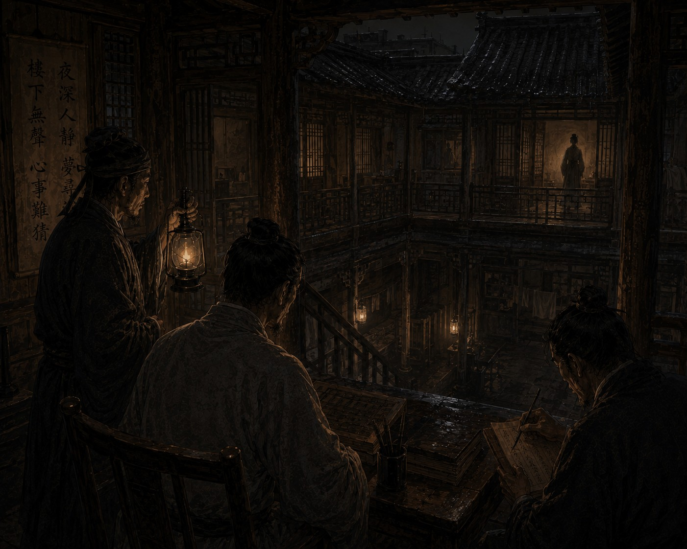

Дело о доме без сна

После подземных каналов я начал бояться засыпать. Сначала мне казалось, что причина в усталости и сыром воздухе подземелий, однако со временем страх приобрел иную природу. Я больше не опасался увидеть кошмар. Гораздо сильнее меня пугало другое — каждую ночь я начинал узнавать место, которого никогда прежде не видел.
Во сне я находился в огромном помещении, где вода покрывала пол тонким холодным слоем. Иногда мне казалось, будто вдоль стен стоят люди. Иногда — будто это вовсе не люди, а только память о них. Но страшнее всего было ощущение света. Я не понимал, что именно чувствую, однако просыпался с уверенностью, что где-то над головой существует нечто яркое, неподвижное и бесконечно далекое. Проснувшись, я обычно долго сидел в темноте и пытался понять, каким образом слепой человек может тосковать по тому, чего никогда не воспринимал.
Именно в это время в столице начали распространяться слухи о доме без сна. Сначала дело казалось мелким и почти нелепым. В северном квартале Цзинъаня жильцы старого доходного дома перестали нормально спать, начали жаловаться на шаги за стенами и просыпались среди ночи с ощущением чужого присутствия. Несколько семей уже покинули здание, а остальные требовали вмешательства властей. Управление Безупречной Гармонии отправило нас скорее для успокоения горожан, чем для настоящего расследования.
Со мной, как обычно, находились Цзянь и Ло. Дом располагался возле старого ответвления городских каналов, в квартале, который еще до моего рождения считался неблагополучным. Узкая трехэтажная постройка из темного дерева казалась старше окружающих домов. Даже воздух рядом с ней был тяжелее, чем на соседних улицах. Внутри пахло сыростью, старой бумагой и чем-то еще — едва уловимым, напоминавшим запах воды в подземельях под столицей.
Хозяйка дома встретила нас с явным облегчением. Она говорила быстро и часто сбивалась, словно уже несколько дней почти не спала.
— Они перестают быть собой, господин следователь, — сказала женщина. — Днем жильцы еще ведут себя нормально. Но ночью начинают слушать стены.
— Что именно они слышат? — спросил я.
Женщина замялась, после чего тихо ответила:
— Разное. Кто-то шаги. Кто-то дыхание. Один старик утверждает, будто слышит плач ребенка под полом.
Ло внимательно осматривал лестницы и перекрытия, а Цзянь тем временем уже разговаривал с жильцами при помощи дощечки и кисти. Сначала следовало исполнить цзянь — наблюдение. Мы провели в доме весь день, беседуя с людьми и переходя из комнаты в комнату. Жильцы выглядели изможденными. Некоторые говорили слишком быстро, другие с трудом подбирали слова, будто часть мыслей оставалась где-то внутри сна.
Однако самым странным оказалось не это. Почти все жильцы видели похожие сны. Одна женщина рассказывала о длинном зале с водой на полу. Старый сапожник говорил о бронзовых дверях. Молодой чиновник несколько ночей подряд видел руки, тянущиеся из темноты. Я слушал их и чувствовал, как холод медленно поднимается вдоль позвоночника, потому что они описывали место из моих собственных снов.
Той же ночью мы решили остаться в доме. Ло дежурил у лестницы. Цзянь сидел возле лампы и записывал рассказы жильцов. Я пытался не засыпать, но ближе к полуночи глаза все же начали закрываться.
И тогда я снова услышал воду.
Не настоящую. Во сне.
Она медленно текла где-то совсем рядом. Когда я открыл глаза, комната была темной, а лампа почти погасла. За стенами стояла абсолютная тишина. А затем снизу раздались шаги. Тихие и медленные, будто кто-то поднимался по лестнице нарочно осторожно.
Ло мгновенно поднялся со своего места. Даже в полумраке я почувствовал, как напряглось его тело. Мы бросились к лестнице одновременно, но никого не увидели. Только влажные следы на деревянных ступенях, будто кто-то пришел с улицы под дождем. Однако дождя той ночью не было.
На следующее утро началось сы — осмысление. Цзянь всю ночь сопоставлял записи жильцов и к рассвету молча протянул мне дощечку. На ней было написано: «Сны совпадают слишком точно». И действительно, совпадений оказалось слишком много. Люди, никогда прежде не разговаривавшие друг с другом, описывали одинаковые коридоры, воду, бронзу, шаги и ощущение огромного пространства, словно находились внутри одного и того же сна.
Тогда мы начали изучать сам дом внимательнее. Ло первым заметил странность. Половицы в северной части здания постоянно оставались холодными, а дерево там даже днем было влажным. Мы разобрали часть пола и обнаружили старый каменный свод. Под домом проходил древний канал, намного более старый, чем современные городские тоннели.
Воздух снизу поднимался тяжелый и холодный. А еще там ощущалась едва различимая вибрация. Не звук в обычном смысле, а непрерывное давление, которое тело воспринимало раньше слуха.
Ло нахмурился.
— Это место давит на голову, — сказал он.
Именно тогда я понял еще одну странность. Дом почти не влиял на Ло. Жильцы слышали шаги. Я видел сны. Цзянь начал просыпаться среди ночи с ощущением чужого присутствия. Но глухой страж оставался почти невосприимчив к тому, что происходило в доме. И это пугало меня сильнее всего.
Вечером мы познакомились со старым жильцом северной комнаты. Немой старик прожил в доме больше сорока лет и категорически отказывался переезжать. Именно он убедил остальных не закрывать здание после первых случаев бессонницы.
Старик встретил нас спокойно, словно давно ждал этого разговора. Цзянь начал задавать ему вопросы. Тот долго отвечал жестами, а затем неожиданно указал вниз, под пол.
— Что там? — спросил я.
Старик прикоснулся ладонью к груди, потом к виску, а затем сложил руки так, будто обнимал кого-то невидимого. Цзянь некоторое время смотрел на него, после чего медленно написал:
— Он говорит, что дом помнит людей.
Этой ночью я снова увидел сон. Я стоял в огромном подземном зале, где вода покрывала каменный пол. Где-то далеко впереди двигались человеческие фигуры. И впервые во сне я понял, что не один. Кто-то находился рядом со мной. Не в самом зале, а возле меня.
Я почувствовал чужое дыхание и внезапно понял, что этот человек тоже меня ощущает.
А затем раздался голос:
— Вы начинаете вспоминать слишком быстро, господин следователь.
Я проснулся резко, словно меня вытолкнули из воды. В комнате было темно. Но возле двери действительно кто-то стоял.
Ло бросился вперед первым. Мы выбежали в коридор, однако там уже никого не оказалось. Только запах сырого камня остался в воздухе, будто неизвестный человек только что вышел из подземного тоннеля.
На следующий день настало дуань — решение. Официально причиной происходящего признали подземные испарения из древнего канала. Часть жильцов переселили, а северное крыло дома закрыли по приказу городских властей. Однако перед уходом я снова встретился со старым немым жильцом.
Он выглядел спокойнее всех остальных. Цзянь спросил его, почему тот так упорно отказывался покидать дом. Старик долго молчал, а затем осторожно прикоснулся пальцами к собственному сердцу и сделал жест, будто гладит чье-то лицо.
Цзянь перевел не сразу.
— Во сне он снова чувствует присутствие умершей жены.
После этих слов я долго не мог ничего сказать. Когда мы уходили, старик остался сидеть у окна северной комнаты. Под половицами тихо шумела вода старого канала. А я внезапно понял вещь, которая оказалась страшнее всех слухов о целостных и древних экспериментах.
Люди готовы разрушать собственный разум ради возможности хотя бы ненадолго перестать быть одинокими. И, возможно, именно поэтому Империя так боится всего, что напоминает человеку о его утраченной целостности.